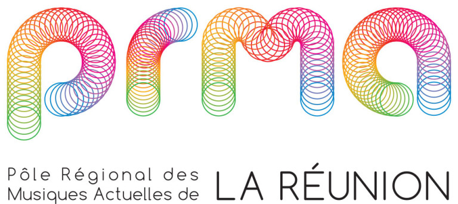

Musiques insulaires et actuelles
Au mois de juin, en attendant l'été (dans l'hémisphère nord), vous avez du aussi attendre la fête de la musique puisque l'été et la fête de la musique tombent comme par hasard le même jour ! Bon en fait ce n'est pas un hasard puisque la date de la fête de la musique a été choisie il y a tout juste 17 ans pour tomber ce jour là…
La musique Réunionnaise est aussi à connaitre et ce n'est pas parce que je n'ai pas de carte son sur mon pécé que je vous en priverais. Retrouvez le son réunionnais, le séga, le maloya et d'autres groupes plus modernes sur le site d'Eric Lesigne (aujourd'hui disparu) qui vous en fera écouter des extraits. Et tant que l'on parle de musiques modernes, visitez aussi le site très officiel du Pôle régional des Musiques Actuelles de La Réunion. Vous pourrez y écouter des extraits de la compilation promotionnelle qu'ils sortent tous les ans.
Le Pôle régional des Musiques Actuelles de La Réunion n'est pas un collectif de musicien ni un nouvel éditeur ni même un organisateur de concert, c'est une association qui a pour but de promouvoir et préserver la musique réunionnaise actuelle dans son ensemble. Elle est donc à l'écoute de ce qu'il se fait de musical à la Réunion et aide à sa promotion tant à la Réunion que dans le reste du monde. C'est pourquoi elle édite sa compile annuelle. C'est, comme je disais, un outil promotionnel.
En 2019, alors que la fête de la musique fête ses 37 ans, il n'y a évidement plus de compile sur le site du PRMA. Qui achète encore des cédés de nos jours ? Sûrement des gens qui n'on pas de carte son sur leur pécé…

L'association existe toujours et son site, un temps sous le nom de runmusic.com est aujourd'hui toujours présent sous le nom de même si le nom officiel est aujourd'hui sous point fr prma-reunion.fr et présente maintenant l'ensemble des activités du pôle depuis les dispositifs d'aide jusqu'à la liste des ateliers offerts aus artistes en herbe de la Réunion.